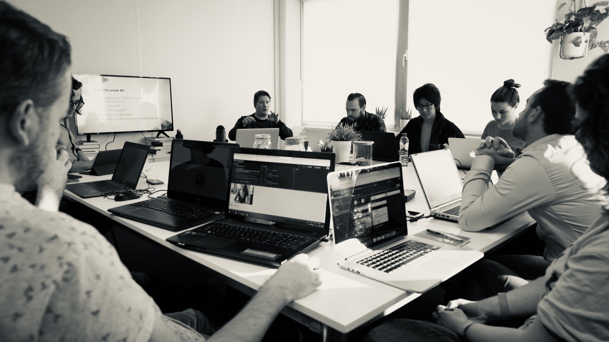

Delivering future skilled people


WE RESHAPE TALENT INTO FUTURE SKILLS
While technology is becoming more and more dominant in how our society operates, we need to be able to understand and control this technology. From a human perspective this means that companies need people to bridge the gap between understanding technology, which is becoming the domain of a selected few, and being able to interpret it in a way it has a meaning to people. To companies.
WPEOPLE WHO CAN TELL THE STORY BEHIND NUMBERS
We believe that it starts with soft skills. We need people who can build bridges, between design & technology, data & business and experts and colleagues. These people have a more social and creative background. Adopting the proper soft skills to being fluent in this task, such as empathy or creativity, is far more complicated than acquiring the necessary hard skills. Therefor we assess people mainly on their soft skills. And then we learn them the hard skills.
NO RECRUITMENT COSTS
We do a thorough assessment on the potential and possession of the soft skills needed. Such as problem solving, creativity, empathy and leadership. If they pass, we investigate which skills track has the best fit with their ambition. And from there on, they start the traineeship in one of our tracks. Your company does not pay for our recruitment. You invest in the development of the necessary hard skills. We take full responsibility on the development of these skills, based on the needs of the company. This way, we can train people specifically in the technological field that is relevant to the company. And we bridge the skills gap that is often experienced by companies.
PEOPLE AND TECHNOLOGY
WWe offer employees who work on the crossroad of people and technology: future skills. It is a complex mix of skills that control the ‘grey area’ within organizations, where technological hard skills need creative soft skills to drive decision making.
Did we catch your attention? We’d like to tell you more. Leave your info below so we can get in touch.
